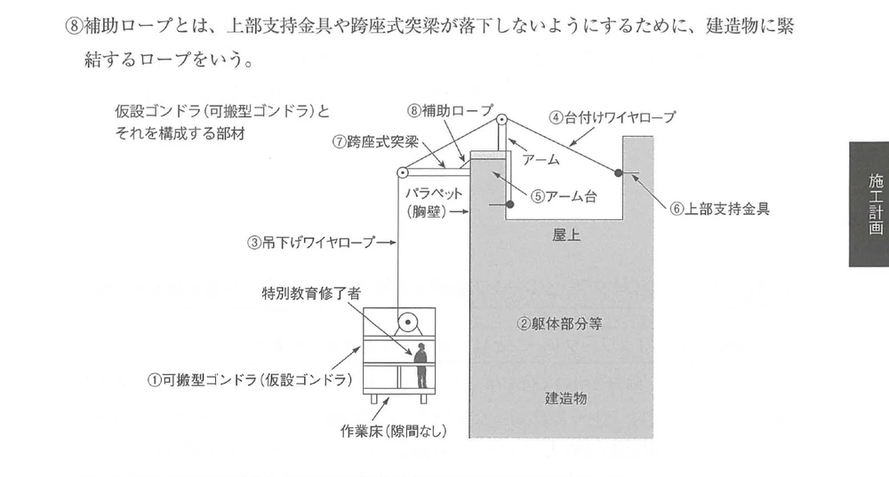
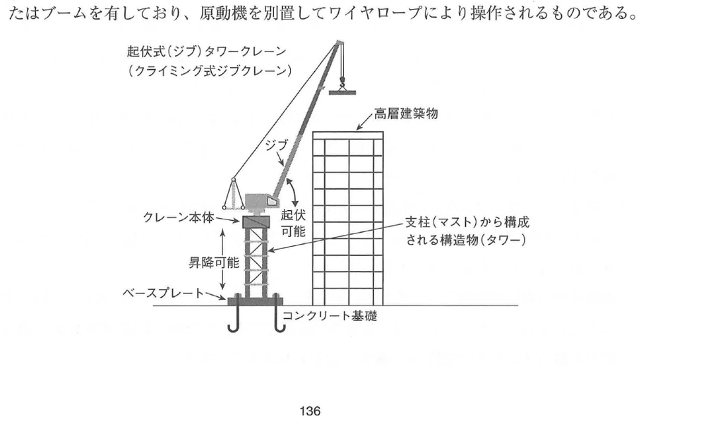
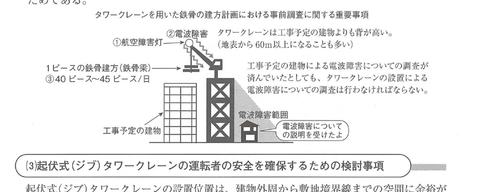
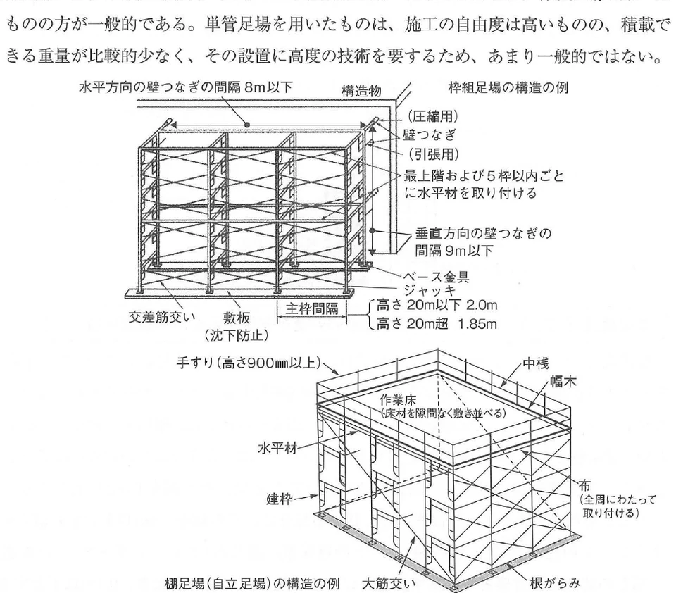
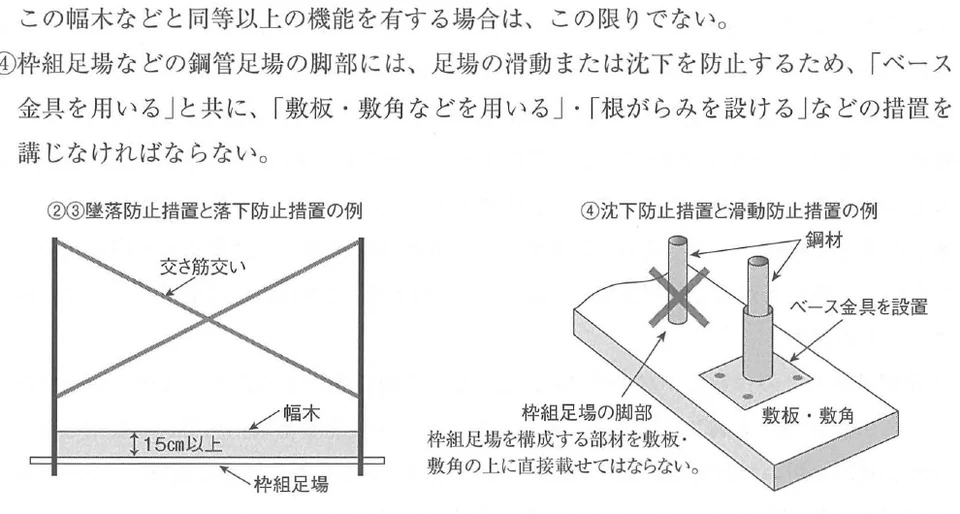

原文 Book page 133
建築工事における次の1.から3.の仮設物の設置を計画するに当たり、検討すべき事項及びその理由を、それぞれ2つ具体的に記述しなさい。
ただし、1.から3.の解答はすべて異なる内容の記述とし、申請手続、届出及び仮設物設置後の運用管理に関する記述は除くものとする。
また、使用資機材に不良品はないものとする。
- 仮設ゴンドラ
- 起伏式（ジブ）タワークレーン
- 枠組足場を用いた棚足場
建築工事における次の1.から3.の仮設物の設置を計画するに当たり、検討すべき事項及びその理由を、それぞれ2つ具体的に記述しなさい。
ただし、1.から3.の解答はすべて異なる内容の記述とし、申請手続、届出及び仮設物設置後の運用管理に関する記述は除くものとする。
また、使用資機材に不良品はないものとする。
Khi lập kế hoạch bố trí ba loại công trình tạm từ 1 đến 3 dưới đây trong công trình xây dựng, hãy trình bày cụ thể 2 nội dung cần xem xét và lý do tương ứng đối với từng loại.
Tuy nhiên, các câu trả lời từ 1 đến 3 phải có nội dung khác nhau; không được viết về thủ tục xin phép, thủ tục thông báo hoặc quản lý vận hành sau khi công trình tạm đã được lắp đặt.
Giả định rằng vật tư và thiết bị sử dụng không có khuyết tật.
出典：可搬型ゴンドラの設置の安全基準に関する技術上の指針
Nguồn trong sách: Hướng dẫn kỹ thuật về tiêu chuẩn an toàn lắp đặt gondola di động.
出典：航空法・電波法・建築工事安全施工技術指針
Nguồn trong sách: Luật Hàng không, Luật Vô tuyến điện và Hướng dẫn kỹ thuật thi công an toàn công trình xây dựng.
出典：労働安全衛生規則
Nguồn trong sách: Quy tắc An toàn và Vệ sinh Lao động.
ゴンドラとは、吊り足場・昇降装置・その他の装置と、これらに附属する物により構成され、その吊り足場の作業床が、専用の昇降装置により上昇または下降する設備である。
Gondola（ゴンドラ） là thiết bị gồm giàn giáo treo, thiết bị nâng hạ, các thiết bị khác và các bộ phận phụ thuộc đi kèm. Sàn công tác của giàn giáo treo được nâng lên hoặc hạ xuống bằng thiết bị nâng hạ chuyên dụng.
「可搬型ゴンドラの設置の安全基準に関する技術上の指針」では、可搬型ゴンドラに関する用語について、次のような定義がされている。（技術上の指針から抜粋・一部改変・補足）
Hướng dẫn kỹ thuật nêu trên định nghĩa các thuật ngữ về gondola di động như sau. Nội dung được sách trích, điều chỉnh một phần và bổ sung.

Chuỗi liên kết chính: 作業床 được treo bằng 吊下げワイヤロープ; đầu trên liên kết với 上部支持金具 / 跨座式突梁 / アーム台; hệ phía mái được neo vào 躯体部分等 bằng 台付けワイヤロープ. 補助ロープ không phải cáp chính treo sàn mà là cáp chống rơi cho phụ kiện phía trên.
「可搬型ゴンドラの設置の安全基準に関する技術上の指針」では、可搬型ゴンドラの設置にあたり、事業者は次のような事項などに留意しなければならないことが定められている。これらの事項は、仮設ゴンドラの設置を計画するにあたり、検討すべき事項およびその理由として、いずれもふさわしいものである。（技術上の指針から抜粋・一部改変・補足）
Theo Hướng dẫn kỹ thuật về tiêu chuẩn an toàn khi lắp đặt gondola di động, đơn vị sử dụng lao động phải lưu ý các nội dung sau. Sách xác định đây đều là các nội dung phù hợp để viết theo dạng “nội dung cần xem xét + lý do”.
実際の試験で解答を記述する際には、上記の④・⑤のように、「検討が必要な理由」や「具体的な検討事項」を簡潔に書きやすい、すなわち「○○のため、○○を検討する」の文章が成り立ちやすいものを選び、本書133ページの「解答例」のような書式で記述することが望ましい。
Khi viết câu trả lời trong kỳ thi, nên chọn các ý như mục ④ và ⑤, tức là các ý có thể viết ngắn gọn lý do cần xem xét và nội dung xem xét cụ thể. Nên chọn nội dung dễ tạo thành câu theo dạng “Để ○○, cần xem xét ○○”, rồi trình bày theo hình thức của ví dụ đáp án ở Book page 133.
クレーンとは、動力を用いて荷を吊り上げ、その荷を水平に運搬することを目的とする機械装置である。単に「クレーン」と言った場合は、下記②の固定式クレーンを指すこともある。
Cẩu（クレーン） là thiết bị cơ khí sử dụng động lực để nâng tải lên và vận chuyển tải theo phương ngang. Khi chỉ nói chung là “crane”, trong một số trường hợp có thể chỉ cẩu cố định nêu tại mục ②.

Chuỗi kết cấu: móng bê tông → base plate → mast/tower → thân cẩu → jib. Hình thể hiện hai chuyển động: 起伏可能, jib có thể nâng hạ để thay đổi tầm với; 昇降可能, thân cẩu có thể được nâng theo chiều cao công trình bằng hệ mast.
起伏式（ジブ）タワークレーンの設置を計画するにあたり、検討すべき事項として最も代表的なものは、下記の①～③である。これらの事項は、いずれも過去の建築施工管理技術検定試験で出題された内容である。したがって、これらの事項に、下記のような「その理由」を併記することにより、確実な解答とすることができる。
Ba nội dung tiêu biểu nhất cần xem xét khi lập kế hoạch bố trí cẩu tháp jib nâng hạ là ① đến ③ dưới đây. Sách cho biết cả ba nội dung đều đã từng xuất hiện trong kỳ thi. Khi viết nội dung cần xem xét kèm lý do tương ứng, có thể tạo thành câu trả lời rõ ràng và chắc chắn.

Hình liên kết ba điểm: 航空障害灯, 電波障害 và 40～45ピース／日. Ngay cả khi đã khảo sát nhiễu sóng do tòa nhà dự kiến xây dựng, vẫn phải khảo sát riêng nhiễu do cẩu tháp, vì cẩu thường cao hơn tòa nhà dự kiến.
起伏式（ジブ）タワークレーンの設置位置は、建物外周から敷地境界線までの空間に余裕があるときは建物外部とし、余裕がないときは建物内部とすることが一般的である。このようなクレーンでは、運転者がクレーンに搭乗するときの墜落のおそれをなくすため、建設物とクレーンの運転室を繋ぐ歩道について、次のように定められている。
Thông thường, nếu khoảng trống từ mép ngoài công trình đến ranh giới khu đất đủ lớn thì bố trí cẩu bên ngoài công trình; nếu không đủ không gian thì bố trí cẩu bên trong công trình. Để người vận hành đi từ công trình sang cabin mà không có nguy cơ ngã cao, lối đi phải đáp ứng các yêu cầu sau.
「枠組足場を用いた棚足場」という言葉を理解するためには、「枠組足場」と「棚足場」というふたつの言葉を理解する必要がある。
Để hiểu cụm “giàn giáo sàn sử dụng giàn giáo khung”, cần phân biệt giàn giáo khung（枠組足場） và giàn giáo sàn（棚足場）.

Hình trên là giàn giáo khung thông thường liên kết với công trình bằng 壁つなぎ. Hình dưới là 棚足場 kiểu tự đứng, cần 水平材, 大筋交い và 根がらみ để ổn định toàn khối; sàn phía trên được lát kín, có tay vịn, thanh giữa và tấm chắn chân.
枠組足場を用いた棚足場の設置を計画するにあたり、検討すべき事項としては、「労働安全衛生規則」の「作業床」・「鋼管足場」・「足場の組立て等の作業」の項目において、次のように定められている。（労働安全衛生規則から枠組足場に関する部分を抜粋・一部改変・補足）
実際の試験で解答を記述する際には、上記の②・③・④のように、「検討が必要な理由」を明記しやすいものを選び、本書133ページの「解答例」のような書式で記述することが望ましい。
Các nội dung cần xem xét khi lập kế hoạch giàn giáo sàn sử dụng giàn giáo khung được quy định trong các phần của Quy tắc An toàn và Vệ sinh Lao động về sàn công tác, giàn giáo ống thép và công tác lắp dựng giàn giáo. Sách trích, điều chỉnh một phần và bổ sung các nội dung liên quan như sau.
Khi viết đáp án thi, nên chọn các nội dung như ②, ③ và ④ vì dễ trình bày rõ theo cấu trúc “lý do nguy hiểm + biện pháp cần xem xét”, rồi viết theo dạng ví dụ đáp án ở Book page 133.

Hình trái minh họa tổ hợp 交差筋交い + 幅木15cm以上. Hình phải nhấn mạnh trình tự đặt chân giàn giáo: nền → 敷板 / 敷角 → ベース金具 → chân giàn giáo. Không đặt trực tiếp cấu kiện đứng của giàn giáo lên ván kê hoặc gỗ kê mà bỏ qua base fitting.
「枠組足場を用いた棚足場」の設置を計画する際に検討すべき事項は、上記(2)の①～⑩のように、「枠組足場」の設置を計画する際に検討すべき事項とほぼ同じであると考えてよい。しかし、やや専門的な視点から、「棚足場」に固有の検討事項を解答とすることもできる。
枠組足場を用いた棚足場は、枠組足場を前方と後方に組み立て、その両方の枠組足場間に、アンチスリップ鋼板を隙間なく敷き詰めて、広いスペースの作業床、一般にステージと呼ばれる作業床とするものである。アンチスリップ鋼板には、アンチ孔と呼ばれる突起の付いた小さな穴があり、滑り止めの効果がある。単に「アンチ」と呼ばれることが多い。
このステージ上では、四方向の同時並行作業ができるため、ステージの組立てに多少の時間と費用を要しても、作業効率が向上し、作業者の安全を確保しやすくなる。近年では、天井の照明設備などに関する室内の高所作業において、棚足場が広く利用されている。
Về cơ bản, các nội dung cần xem xét khi lập kế hoạch 棚足場 gần giống các yêu cầu chung của giàn giáo khung ở mục (2), từ ① đến ⑩. Tuy nhiên, khi trả lời theo góc nhìn chuyên sâu hơn, có thể dùng các đặc điểm riêng của 棚足場.
Giàn giáo sàn sử dụng giàn giáo khung được tạo bằng cách dựng hai hệ giàn giáo khung phía trước và phía sau, rồi trải kín tấm thép chống trượt（アンチスリップ鋼板） giữa hai hệ để tạo sàn công tác rộng gọi là stage（ステージ）. Tấm này có các lỗ nhỏ với phần gờ nổi gọi là アンチ孔, tạo tác dụng chống trượt và thường được gọi ngắn là アンチ.
Trên stage có thể tiến hành công tác đồng thời theo bốn hướng. Vì vậy, dù lắp dựng stage cần thêm thời gian và chi phí, hiệu suất công việc được nâng cao và dễ bảo đảm an toàn hơn. 棚足場 được sử dụng rộng rãi cho công việc trong nhà trên cao, như thi công thiết bị chiếu sáng trên trần.
仮設物3. 枠組足場を用いた棚足場の設置を計画する際に検討すべき事項とその理由
Công trình tạm 3. Nội dung cần xem xét khi lập kế hoạch giàn giáo sàn sử dụng giàn giáo khung và lý do
| 日本語 | 読み方 | Tiếng Việt | Giải thích | Liên quan |
|---|---|---|---|---|
| 仮設ゴンドラ | かせつゴンドラ | Gondola tạm | Sàn công tác treo có cơ cấu nâng hạ, được lắp trong thời gian nhất định để phục vụ thi công. | 可搬型ゴンドラ |
| 常設型ゴンドラ | じょうせつがたゴンドラ | Gondola lắp cố định | Được lắp thường xuyên trên công trình, chủ yếu phục vụ bảo trì và vệ sinh kính. | 可搬型ゴンドラ |
| 可搬型ゴンドラ | かはんがたゴンドラ | Gondola di động | Dễ vận chuyển, lắp đặt và tháo dỡ; được lắp trong một thời gian nhất định. | 仮設ゴンドラ |
| 吊り足場 | つりあしば | Giàn giáo treo | Sàn công tác được treo từ kết cấu phía trên. | 作業床 |
| 昇降装置 | しょうこうそうち | Thiết bị nâng hạ | Cơ cấu làm sàn gondola đi lên hoặc xuống. | ゴンドラ |
| 躯体部分等 | くたいぶぶんとう | Bộ phận kết cấu công trình | Phần kết cấu và phụ kiện được dùng làm điểm đỡ hoặc neo gondola. | パラペット・ひさし・丸環 |
| パラペット | パラペット | Parapet, tường chắn mái | Tường thấp tại mép mái. | 上部支持金具 |
| 丸環 | まるかん | Vòng neo | Vòng kim loại được sử dụng làm điểm neo. | 躯体部分等 |
| 吊下げワイヤロープ | つりさげワイヤロープ | Cáp treo | Cáp trực tiếp treo sàn gondola. | 台付けワイヤロープ |
| 台付けワイヤロープ | だいつけワイヤロープ | Cáp neo | Cáp liên kết với kết cấu công trình để cố định đầu cáp treo. | 躯体部分等 |
| アーム台 | アームだい | Bệ tay đỡ | Bệ có tay nhô dùng để mắc hoặc dẫn cáp treo. | 吊下げワイヤロープ |
| 上部支持金具 | じょうぶしじかなぐ | Phụ kiện đỡ phía trên | Phụ kiện dạng móc đặt tại parapet hoặc mái hắt để cố định đầu cáp treo. | 跨座式突梁 |
| 跨座式突梁 | こざしきとつりょう | Dầm console kiểu cưỡi qua parapet | Dầm nhô đưa vị trí treo ra ngoài và giữ khoảng cách giữa gondola với mặt tường. | 上部支持金具 |
| 補助ロープ | ほじょロープ | Cáp phụ | Neo phụ kiện phía trên vào công trình để chống rơi; không phải cáp chính treo sàn. | 上部支持金具・跨座式突梁 |
| シャックル | シャックル | Shackle, ma ní | Phụ kiện liên kết kim loại dạng chữ U. | 吊下げワイヤロープ |
| 吊心間隔 | つりしんかんかく | Khoảng cách tâm treo | Khoảng cách giữa các vị trí treo của gondola. | 取付け間隔 |
| 特別教育修了者 | とくべつきょういくしゅうりょうしゃ | Người hoàn thành huấn luyện đặc biệt | Người đã hoàn tất loại huấn luyện an toàn áp dụng cho công việc tương ứng. | ゴンドラ作業 |
| 充電電路 | じゅうでんでんろ | Mạch điện đang mang điện | Dây dẫn hoặc mạch điện đang có điện áp. | 絶縁用防具 |
| 絶縁用防具 | ぜつえんようぼうぐ | Dụng cụ bảo vệ cách điện | Vật bảo vệ lắp lên phần mang điện để phòng tiếp xúc gây điện giật. | 充電電路 |
| 起伏式タワークレーン | きふくしきタワークレーン | Cẩu tháp jib nâng hạ | Điều chỉnh tầm với bằng thay đổi góc jib. | ジブ・マスト |
| ジブ | ジブ | Jib, cần cẩu | Bộ phận cần nhô ra để treo và di chuyển tải. | 起伏・旋回 |
| マスト | マスト | Mast, thân cột cẩu | Các đoạn tháp đứng được nối chồng để tạo tower. | クライミング式 |
| クライミング式 | クライミングしき | Kiểu climbing | Cẩu có thể nâng cao thân cẩu theo tiến độ tăng chiều cao công trình. | タワークレーン |
| 固定式クレーン | こていしきクレーン | Cẩu cố định | Cẩu bố trí tại vị trí xác định, không thuộc nhóm cẩu di động hoặc derrick. | 移動式クレーン |
| 移動式クレーン | いどうしきクレーン | Cẩu di động | Có động cơ tích hợp và có thể di chuyển đến vị trí không cố định. | 固定式クレーン |
| デリック | デリック | Derrick | Thiết bị nâng có mast hoặc boom, động cơ đặt riêng, vận hành bằng cáp thép. | ワイヤロープ |
| 航空障害灯 | こうくうしょうがいとう | Đèn chướng ngại hàng không | Đèn báo để máy bay nhận biết vật thể cao. | 60m以上 |
| 電波障害 | でんぱしょうがい | Nhiễu sóng vô tuyến | Hiện tượng công trình hoặc thiết bị cản trở tín hiệu truyền hình, vô tuyến. | 近隣説明 |
| 鉄骨建方 | てっこつたてかた | Lắp dựng kết cấu thép | Công tác dựng và liên kết cột, dầm thép tại hiện trường. | 取付け歩掛り |
| 歩掛り | ぶがかり | Định mức năng suất | Khối lượng công việc thực hiện trên một đơn vị thời gian hoặc nguồn lực. | 40～45ピース／日 |
| 枠組足場 | わくぐみあしば | Giàn giáo khung | Giàn giáo module tạo từ các khung thép dạng cổng. | 建枠・交差筋交い |
| 棚足場 | たなあしば | Giàn giáo sàn | Hệ giàn giáo tạo một mặt sàn công tác rộng. | ステージ足場 |
| ステージ足場 | ステージあしば | Stage scaffold | Cách gọi khác của 棚足場. | 棚足場 |
| 建枠 | たてわく | Khung chính | Khung thép đứng tạo cấu trúc chính của giàn giáo khung. | 主枠 |
| 床付布枠 | ゆかつきぬのわく | Khung ngang có sàn | Cấu kiện bằng thép tạo sàn công tác. | 作業床 |
| 交差筋交い | こうさすじかい | Giằng chéo chữ X | Tăng ổn định giàn giáo và là bộ phận của hệ chống ngã. | 幅木・桟 |
| 壁つなぎ | かべつなぎ | Liên kết tường | Liên kết giàn giáo với kết cấu công trình. | 水平8m・垂直9m |
| 幅木 | はばき | Tấm chắn chân | Tấm đứng thấp tại mép sàn, hỗ trợ chống ngã và vật rơi tùy điều kiện. | 15cm・10cm |
| 桟 | さん | Thanh ngang | Cấu kiện ngang trong hệ bảo vệ chống ngã. | 15～40cm |
| 根がらみ | ねがらみ | Giằng chân | Thanh liên kết các chân giàn giáo gần mặt nền. | 滑動・沈下防止 |
| 大筋交い | おおすじかい | Giằng chéo lớn | Ổn định toàn bộ khối giàn giáo tự đứng. | 棚足場 |
| 梁枠 | はりわく | Khung dầm | Khung phụ dùng vượt qua khoảng trống. | 水平筋交い |
| 持送り枠 | もちおくりわく | Khung console | Khung nhô ra khỏi thân giàn giáo. | 水平筋交い |
| 水平筋交い | すいへいすじかい | Giằng chéo ngang | Chống biến dạng và rung lắc trong mặt phẳng ngang. | 梁枠・持送り枠 |
| アンチスリップ鋼板 | アンチスリップこうはん | Tấm thép chống trượt | Tấm thép tạo sàn stage, có lỗ gờ nổi chống trượt. | アンチ孔 |
| アンチ孔 | アンチこう | Lỗ chống trượt | Lỗ nhỏ có phần gờ nổi làm tăng ma sát. | アンチ |
| 作業主任者 | さぎょうしゅにんしゃ | Người phụ trách công tác | Người có đủ điều kiện được chỉ định để trực tiếp chỉ huy công việc thuộc phạm vi quy định. | 足場組立て |
| 要求性能墜落制止用器具 | ようきゅうせいのうついらくせいしようきぐ | Thiết bị ngăn rơi đáp ứng tính năng yêu cầu | Thiết bị bảo vệ cá nhân dùng để ngăn ngã cao, kết hợp điểm neo an toàn. | 高所作業 |
吊下げワイヤロープ trực tiếp treo sàn gondola. 台付けワイヤロープ neo hệ cáp vào kết cấu công trình. アーム台・上部支持金具・跨座式突梁 tạo và giữ vị trí treo phía mái. 補助ロープ chống rơi cho các phụ kiện đỡ phía trên.
Khoảng cách các điểm đỡ phía mái phải bằng 吊心間隔 của gondola để các cáp làm việc đúng vị trí và hạn chế gondola bị nghiêng khi nâng hạ.
起伏 là thay đổi góc của jib để thay đổi tầm với. クライミング là nâng cao thân cẩu bằng cách tăng hoặc điều chỉnh hệ mast theo chiều cao công trình.
Khi lập kế hoạch, cần đồng thời xét ảnh hưởng bên ngoài công trường, gồm hàng không và sóng vô tuyến, cùng năng suất cẩu để bảo đảm tiến độ lắp dựng thép.
Giàn giáo ngoài nhà thông thường có thể ổn định nhờ liên kết tường. 棚足場 trong hình là hệ tự đứng, nên toàn khối phải tự bảo đảm ổn định bằng 水平材・大筋交い・根がらみ. Vì số cấu kiện nhiều và sàn rộng, thời gian lắp dựng dài hơn và việc vận chuyển vật liệu giữa mặt đất với stage phải được đưa vào kế hoạch.
Đối với chân giàn giáo, tải trọng phải truyền theo chuỗi chân giàn giáo → base fitting → ván/gỗ kê → nền. Không bỏ base fitting và đặt trực tiếp cấu kiện đứng lên tấm kê.
| Đối tượng / parameter | Trị số | Ý nghĩa |
|---|---|---|
| Chiều cao vật thể cần xem xét 航空障害灯 | ≥ 60 m | Lắp đèn chướng ngại hàng không theo điều kiện trong sách. |
| Năng suất lắp dựng thép bằng cẩu tháp | 40～45 piece/cẩu/ngày | Dùng để xác định số lượng cẩu cần bố trí. |
| Lối đi giữa cẩu và công trình | ≥ 0,6 m | Chiều rộng thông thường. |
| Đoạn lối đi tiếp giáp cột | ≥ 0,4 m | Giá trị cho đoạn tiếp giáp cột. |
| Khoảng cách cabin và mép lối đi | ≤ 0,3 m | Áp dụng trừ khi không có nguy cơ ngã. |
| 壁つなぎ theo phương ngang | ≤ 8 m | Trị số trong hình cấu tạo giàn giáo khung. |
| 壁つなぎ theo phương đứng | ≤ 9 m | Trị số trong hình cấu tạo giàn giáo khung. |
| Tay vịn của 棚足場 trong hình | ≥ 900 mm | Trị số chú thích trong hình Book page 138. |
| Vị trí làm việc phải có sàn công tác | cao ≥ 2 m | Điều kiện phải bố trí sàn công tác. |
| Số điểm đỡ của vật liệu sàn | ≥ 2 điểm | Ngăn dịch chuyển hoặc tuột rơi. |
| 幅木 trong tổ hợp chống ngã | ≥ 15 cm | Dùng cùng 交差筋交い. |
| 桟 trong tổ hợp chống ngã | 15～40 cm | Dùng cùng 交差筋交い. |
| 幅木 chống vật rơi | ≥ 10 cm | Không nhầm với trị số 15 cm của tổ hợp chống ngã. |
| Chu kỳ bố trí 水平材 | tầng trên cùng + mỗi ≤ 5 tầng | Hạn chế xoắn và giữ cường độ giàn giáo. |
| Khoảng cách khung chính khi chiều cao ≤ 20 m trong hình | 2,0 m | Trị số minh họa Book page 138. |
| Khi giàn giáo cao > 20 m hoặc có tải nặng | khung cao ≤ 2 m; khoảng cách ≤ 1,85 m | Điều kiện định lượng ở mục ⑦. |
| Sàn công tác khi liên kết, tháo, chuyển vật liệu giàn giáo | rộng ≥ 40 cm | Biện pháp phòng ngã khi thao tác vật liệu. |
| Cặp khái niệm | Phân biệt cần nhớ |
|---|---|
| 常設型 ↔ 可搬型 | 常設型: lắp thường xuyên để bảo trì. 可搬型: lắp trong thời gian nhất định để thi công; chính là 仮設ゴンドラ trong đề. |
| 吊下げワイヤロープ ↔ 台付けワイヤロープ | Cáp treo trực tiếp treo sàn ↔ cáp neo vào kết cấu công trình. |
| 補助ロープ ↔ cáp treo chính | 補助ロープ chống rơi cho phụ kiện phía trên, không trực tiếp treo sàn gondola. |
| 幅木 15 cm ↔ 10 cm | 15 cm trong tổ hợp chống ngã của giàn giáo khung ↔ 10 cm cho mục đích chống vật rơi. |
| 枠組足場 ↔ 棚足場 | 枠組足場 là loại kết cấu giàn giáo ↔ 棚足場 là dạng sàn công tác rộng được tạo trên hệ giàn giáo. |
| 固定式 ↔ 移動式 ↔ デリック | Cố định tại công trình ↔ có động cơ tích hợp và di chuyển được ↔ động cơ đặt riêng, vận hành bằng cáp. |
Cáp neo không lỏng và được bảo vệ cạnh sắc → cáp treo dùng shackle → khoảng cách điểm treo bằng 吊心間隔 → cấm người không liên quan → chống điện giật.
60 → 40～45 → 0,6 → 0,4 → 0,3
60 m: đèn hàng không; 40～45 piece/ngày: năng suất; 0,6 m: lối đi; 0,4 m: đoạn sát cột; 0,3 m: khe giữa cabin và lối đi.
Tự đứng → nhiều cấu kiện → lắp lâu → phải dự phòng thời gian.
Stage ở trên cao → vận chuyển khó → kế hoạch phải gồm vận chuyển vật liệu và thiết bị.
| {{HEADER_1}} | {{HEADER_2}} |
|---|---|
| {{ROW_KEY}} | {{ROW_RELATION}} |
{{NOTE_CONTENT}}
{{WARNING_CONTENT}}
{{MEMORY_ITEM}}